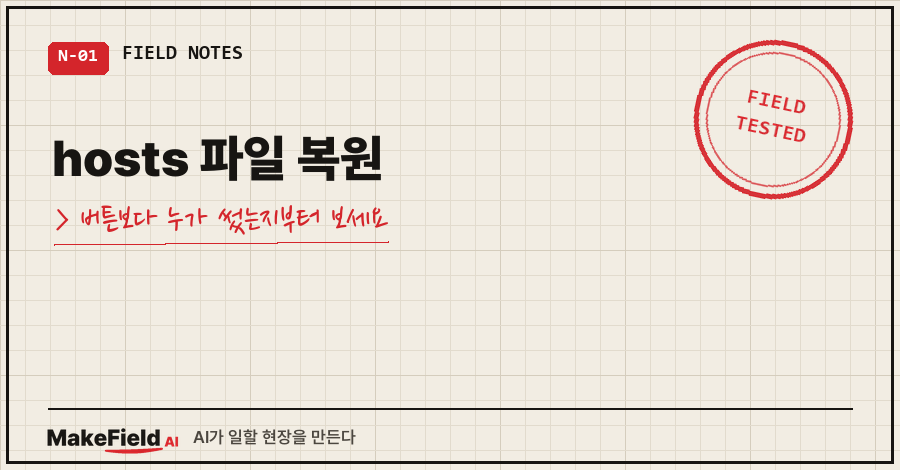
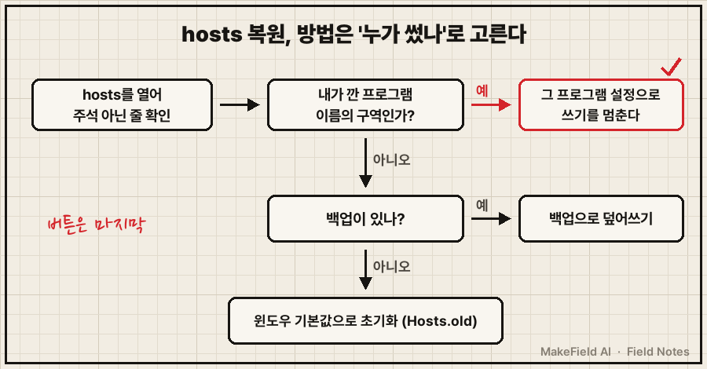
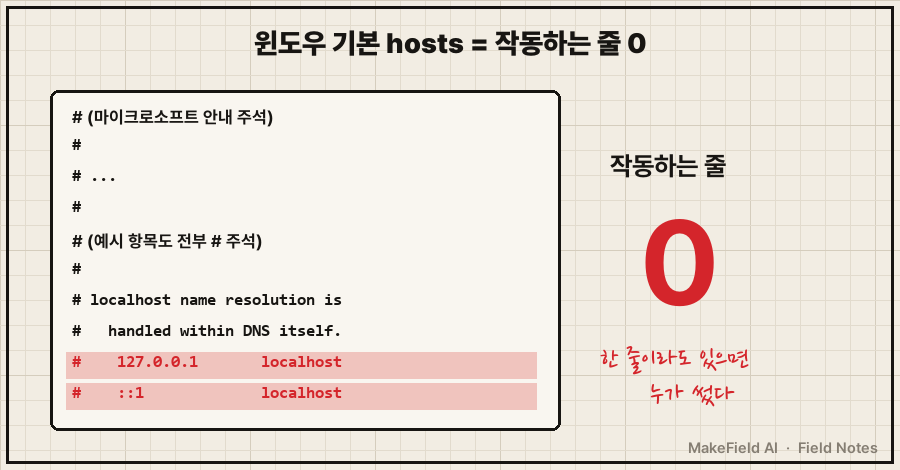
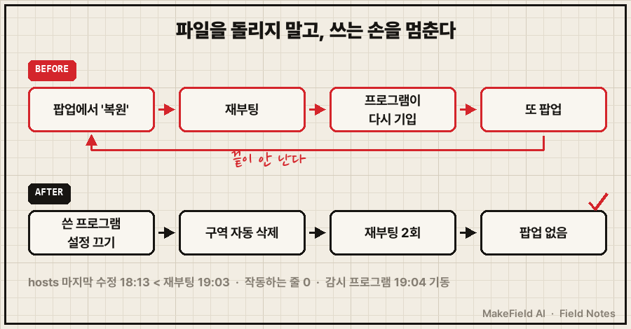

hosts 파일 복원은 "누가 이 파일에 썼는가"를 먼저 확인한 다음 방법을 고르는 게 순서예요.
쓴 게 내가 깐 프로그램이면 그 프로그램 설정을 바꾸고, 정체 모를 항목이면 백업이나 윈도우 기본값으로 덮어쓰면 됩니다.
쓴 쪽을 그대로 두고 복원만 하면, 다음 부팅에 또 써져서 끝이 안 나거든요.
핵심만 한 줄로: 윈도우 10·11의 기본 hosts 파일은 모든 줄이 # 주석이라 실제로 작동하는 줄이 0줄이고, 마이크로소프트 공식 복원 절차는 기존 파일을 Hosts.old로 이름 바꾼 뒤 기본 내용으로 새 파일을 넣는 방식입니다(→ https://support.microsoft.com/en-us/windows/experience/how-to-reset-the-hosts-file-back-to-the-default).
저는 현장에서 기계가 멈추면 원인부터 짚는 일을 15년째 하고 있어요. 그런데 제 노트북 hosts 팝업 앞에서는 처음에 악성코드부터 의심했어요. 2026년 9월, 윈도우 10 노트북에서 겪은 일이에요.
1. 이런 화면에서 이 글을 찾으셨을 거예요
제 경우엔 재부팅할 때마다 금융 보안 프로그램이 이렇게 물었어요.
hosts 파일 변경이 탐지되었습니다. 복원하시겠습니까?"복원" 버튼 하나 누르면 끝날 것 같죠. 그런데 이 팝업이 부팅마다 다시 뜬다면 버튼으로는 안 끝납니다. 누군가 부팅할 때마다 hosts에 다시 쓰고 있다는 뜻이니까요.
열어보니 범인은 며칠 전 제가 직접 깐 원격접속용 VPN 툴이었어요. 자기 구역을 만들어 제 기기 네 대의 이름을 적어두고 있었습니다. 악성코드가 아니라는 판정과 그 과정은 이전 글에 따로 정리해 뒀어요(→ https://blog.naver.com/makefield_ai/224410743445). 이 글은 그다음 질문, 그래서 hosts를 어떻게 원래대로 돌리느냐만 다룹니다.
2. 복원 방법은 네 가지, 고르는 기준은 하나
방법은 네 가지인데, 고르는 기준은 "누가 썼는지 아는가" 하나예요.
| 복원 방법 | 이럴 때 | 주의할 점 |
|---|---|---|
| 보안 프로그램 팝업의 '복원' 버튼 | 한 번만 뜨고 다시 안 뜰 때 | 부팅마다 뜨면 쓴 쪽이 살아 있다는 뜻 |
| 쓴 프로그램의 설정 끄기 | 내가 깐 프로그램 이름의 구역이 보일 때 | 그 프로그램이 다시 켜지면 재발 |
| 백업 파일로 덮어쓰기 | 고치기 전에 복사본을 남겨뒀을 때 | 관리자 권한 필요 |
| 윈도우 기본값으로 초기화 | 백업이 없고, 정체 모를 항목이 있을 때 | 내가 일부러 넣은 항목도 같이 사라짐 |

저는 두 번째를 골랐어요. 쓴 쪽이 정상 프로그램이었고, 부팅마다 다시 쓰고 있었거든요. 파일을 아무리 돌려놔도 쓰는 손을 멈추지 않으면 다음 부팅에 또 써집니다.
3. hosts 파일 복원, 따라 하는 순서
① 손대기 전에 백업부터
저는 날짜를 붙여 복사본을 남겼어요. 실제로 남긴 이름이 hosts.bak_20260913 이었습니다. 관리자 권한 PowerShell에서 이렇게 합니다.
Copy-Item "C:\Windows\System32\drivers\etc\hosts" "C:\Windows\System32\drivers\etc\hosts.bak_20260913"② 쓴 프로그램이 있으면 그 설정부터
제 경우엔 VPN 툴의 "DNS 설정 받기" 옵션을 끈 한 줄이 곧 복원이었어요. 옵션을 끄자 툴이 자기 구역을 스스로 걷어냈고, hosts가 윈도우 원본 상태로 돌아갔습니다. 제가 파일을 직접 고친 줄은 없었어요.
③ 백업으로 되돌릴 때
백업이 있다면 거꾸로 덮어쓰면 됩니다. -Force 는 읽기 전용 같은 이유로 그냥은 바꿀 수 없는 파일도 덮어쓰게 하는 옵션이에요(→ https://learn.microsoft.com/en-us/powershell/module/microsoft.powershell.management/copy-item).
Copy-Item "C:\Windows\System32\drivers\etc\hosts.bak_20260913" "C:\Windows\System32\drivers\etc\hosts" -Force④ 백업이 없으면 마이크로소프트 공식 절차로 초기화
- 메모장을 열고, 공식 지원 문서의 기본 hosts 내용을 붙여 넣어요.
- '다른 이름으로 저장'에서 파일 형식을 모든 파일로 바꾸고 이름을
"hosts"로 저장해요. hosts는 확장자가 없어야 합니다. %WinDir%\System32\Drivers\Etc폴더에서 기존 hosts 이름을Hosts.old로 바꿔요.- 새로 만든 hosts를 그 폴더에 넣고, 관리자 확인 창이 뜨면 승인해요.
기존 파일을 지우지 않고 Hosts.old 로 남기는 건, 초기화 뒤 특정 사이트가 안 열리면 거기서 필요한 줄만 다시 옮겨오기 위해서예요.
⑤ 마지막으로 DNS 캐시 비우기
윈도우는 hosts 항목을 DNS 캐시에 미리 올려두고 씁니다(→ https://learn.microsoft.com/en-us/windows-server/administration/windows-commands/ipconfig). 파일을 바꾼 직후엔 예전 결과가 남아 있을 수 있어서 캐시를 한 번 비워요.
ipconfig /flushdns4. hosts 파일 복원 확인은 '0줄'과 '시각'으로
윈도우 기본 hosts는 localhost 줄까지 전부 # 주석입니다. localhost 처리는 DNS가 알아서 한다고 공식 문서에 적혀 있어요. 그러니까 복원 직후 주석이 아닌 줄이 0줄이면 기본값으로 돌아간 거예요.

제가 실제로 확인한 숫자는 이랬어요.
hosts 마지막 수정 : 18:13 ← 재부팅(19:03) 이전 = 부팅 후 다시 써진 적 없음
hosts 작동하는 줄 : 0줄 (주석 제외)
보안 프로그램 : 19:04 기동 = 감시는 살아 있음
팝업 : 재부팅 2회 모두 안 뜸꼭 같이 볼 게 세 번째 줄이에요. 팝업이 안 뜬 이유가 보안 프로그램이 죽어서라면 복원이 된 게 아니잖아요. 감시는 살아 있는데 바뀐 게 없어 조용하다, 이걸 봐야 종결입니다. 저도 이 줄을 보고 나서야 "다른 프로그램이 또 건드리는 것일 수도 있다"는 가설을 지웠어요..

5. 같은 증상, 다른 경우
- hosts 파일이 어디 있는지, 메모장에서 왜 안 보이는지부터 막혔다 → 위치·여는 법·관리자 권한·확인 명령은 따로 정리했어요(→ https://blog.naver.com/makefield_ai/224433332191)
- 팝업 자체가 악성코드 신호인지 궁금하다 → 제가 오탐으로 판정한 근거와, 보안 프로그램을 지우지 않은 이유는 이전 글에 있어요(→ https://blog.naver.com/makefield_ai/224410743445)
- 원격 데스크톱 연결이 안 된다 → 같은 시기 원격접속을 손보다 만난 다른 원인(계정 잠김)은 이 글에 있어요(→ https://blog.naver.com/makefield_ai/224410366627)
이런 질문이 나올 것 같아서
Q. hosts 파일 복원하면 인터넷이나 원격접속이 끊기나요?
기본값은 작동하는 줄이 0줄이라, 일반 인터넷은 DNS로 평소처럼 찾아갑니다. 제 경우엔 원격접속 툴이 쓴 구역이 통째로 사라졌는데도 다른 기기에서 이 노트북으로 붙는 접속은 그대로 됐습니다. 이름을 IP로 바꾸는 일은 접속하는 쪽 기기에서 일어나기 때문이에요. 다만 이 PC에서 그 이름으로 다른 기기를 부르던 건 안 될 수 있어요.
Q. 팝업의 '복원' 버튼을 이미 눌렀는데 또 떠요.
버튼이 고장 난 게 아니라 쓰는 쪽이 살아 있는 거예요. hosts를 열어 주석이 아닌 줄에 어떤 이름이 적혀 있는지 보세요. 내가 깐 프로그램 이름이 보이면 그 프로그램 설정을, 처음 보는 도메인과 IP면 감염 쪽을 먼저 의심하는 게 순서입니다.
팝업이 "복원할까요?"라고 물으면 다들 복원부터 누르게 되죠. 제 경우엔 결국 고친 게 파일이 아니라 파일에 쓰던 프로그램의 설정 한 줄이었습니다. 여러분 hosts에는 지금 몇 줄이 살아 있나요?
PC가 이상할 때 AI랑 원인을 짚어간 기록은 makefield.ai에도 모아두고 있어요.
출처
- Microsoft 지원, How to reset the Hosts file back to the default (Windows 10·11 — 메모장 저장, "hosts" 이름·모든 파일, Hosts.old 이름 변경, 관리자 승인, 기본 내용 전부 # 주석, localhost는 DNS가 처리) → https://support.microsoft.com/en-us/windows/experience/how-to-reset-the-hosts-file-back-to-the-default
- Microsoft Learn, ipconfig (/displaydns에 hosts에서 미리 올린 항목 포함, /flushdns 캐시 비우기) → https://learn.microsoft.com/en-us/windows-server/administration/windows-commands/ipconfig
- Microsoft Learn, Copy-Item (-Force: 읽기 전용 등 바꿀 수 없는 항목 덮어쓰기) → https://learn.microsoft.com/en-us/powershell/module/microsoft.powershell.management/copy-item
- 증상·실측값: 2026-09-13 개인 노트북 점검 기록(제품명·기기명·IP 제외)
태그: #hosts파일복원 #hosts파일기본값 #hosts파일초기화 #hosts파일원래대로 #hosts파일백업 #hosts파일변경탐지 #hosts복원팝업 #Hostsold #driversetc #ipconfigflushdns #윈도우hosts #윈도우11hosts #파밍경고 #PC보안점검 #MakeFieldAI